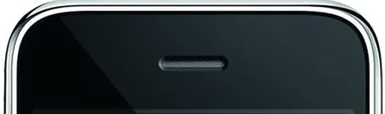

Clique sobre as áreas destacadas com emoticons.

Widescreen de 3,5 polegadas (diagonal), Multi-Touch Resolução de 480 por 320 pixels, 163 ppi Revestimento resistente à impressão digital e oleosidade Suporte a vários idiomas e caracteres simultaneamente
Com o iPhone 3GS será possível tirar fotos com até 3 megapixels e gravar vídeos com 720 linhas de resolução. Os primeiros vídeos e fotos capturados com o aparelho já começaram a circular pela rede, mas até agora ninguém tem muitas informações técnicas.
Acelerômetro
de proximidade
Sensor de luz ambiente
Segundo a própria Apple, o iPhone virá com uma bateria que tem autonomia suficiente para durar um dia inteiro. Apenas algumas atividades como videoconferências e longas filmagens vão exigir um pouco mais. Além disso ele vem com WiFi, Bluetooth, 3Ge muito mais.